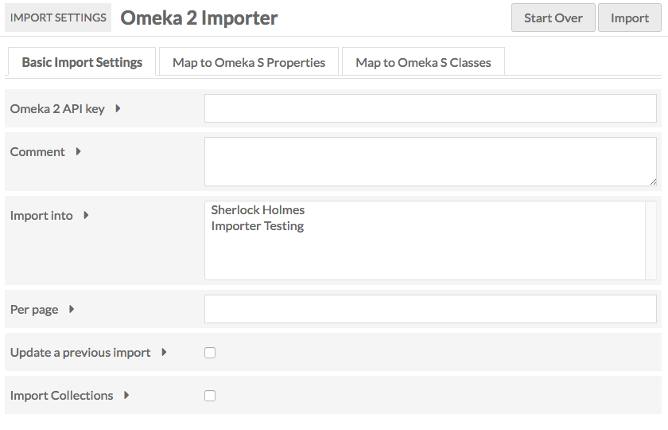
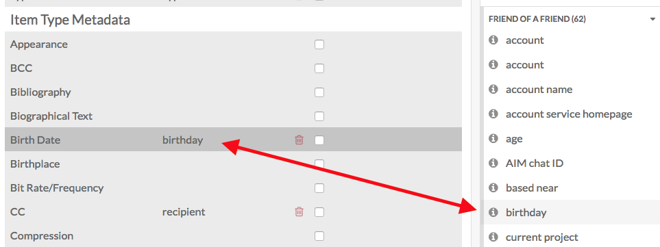

The Omeka 2 Importer module which enables you to import items from an Omeka 2.x site into an Omeka S installation.
For information on installing, see the instructions on the general modules page.
Once installed, the Omeka 2 Importer module should appear toward the bottom of the left navigation menu on the main admin dashboard. When selected, there are sub-menu items for Import and Past Imports

Note that the module only imports Dublin Core metadata, Item Type metadata, and files. It will not import tags or Geolocation data.
Import
From the Import tab you can start new imports.
Note You must have API enabled on the source Omeka installation for the importer to work.
Enter the API
On the first page of the importer, enter the Omeka 2 Api Endpoint - the site URL for the API you wish to access (it should end with api). Make sure you enter the full url, beginning with http, otherwise the importer will not be able to access the items at that site. Click next.

If you have entered a valid API endpoint, the next page will load with no issue. If you have entered an invalid endpoint, the module will display error messages “Warning: Invalid argument”.
Import Settings and Map Metadata
On the second page of the importer there are tabs for basic import settings, mapping Omeka Classic elements to Omeka S properties, and mapping Omeka Classic item types to Omeka S classes.
Move between all three tabs to ensure that the data is mapped as you want and the settings are correct before clicking Import.
Clicking the Start Over button will take you back to the API import url field.
Basic Import Settings
- Omeka 2 Api Key: This field can either be blank or filled, depending on whether you have an API key for the site you are attempting to import data from.
- Comment: You can add a comment such as “Jane Doe’s API, no key” to help identify the specific import when viewing previous imports.
- Import Into: This option allows you to select the item set into which you want to import the items. Note that you can only import into item sets which you own.
- Per Page is an option setting to limit the number of records per request that you retreive. Useful for sites which may have thousands of items per page.
- Update a previous import allows you to update - and overwrite - a previous import from the same source.
- Import Collections: Check this box if you wish to import the collections from the Omeka 2 site to the Omeka S site.

Map to Omeka S Properties
This tab features a table for mapping between Omeka @ elements and Omeka S properties.
The Import module will automatically map many properties, but you may want to review the mapping in case you need to add or edit the automatic mapping. Custom item type elements may not map; you will need to manually map them.
To clear the default mapping, click the Clear Defaults button.
The columns of the table are Omeka 2 Element, Mapped Properties and a checkbox option to Import as HTML Media.

The first set of the table is Dublin Core, followed by Item Type Metadata, but the import will also bring in any legacy or additional element sets (for example Omeka Legacy File).
To map:
- Select the element or item type in the table by clicking on its row or label.
- In the right-hand drawer, either click through or search for the property to which you want to map your element.
- Click on the property in the drawer to map it.

To remove a mapping, click the delete (trash can) icon in the element/property row.
Map to Omeka S Classes
In this tab you map Omeka Classic Item Types to Omeka S Resource Classes. You can select from the classes for any of the installed vocabularies.
To map:
- Select the item type in the table by clicking on its row or label.
- In the right-hand drawer, either click through or search for the resource class to which you want to map your element.
- Click on the resource class in the drawer to map it.

Complete Import
When you have finished customizing the mapping, click the Import button in the upper right corner of the window.
Manage Past Imports
The past imports section of the module allows you to view previous API imports.
Each import is a row. The table has the following columns.
- Undo: Check this box if you wish to undo the import. Once you click submit, the status for that specific import will be undone.
- Job ID: A numerical value assigned to each specific API import. You can also view the job under the Jobs tab on the administrative dashboard.
- Comment: If you entered a comment in the Comment field in the Import section of the module, that comment will appear. If you typed "Jane Doe's API, no key" in the import section you will see it as a comment.
- Items: Lists the number of items added and updated with each import.
- Date: The date on which the import took place.
- Status: Will be in_progress, completed, or undone.
- Owner: The user who requested the import.